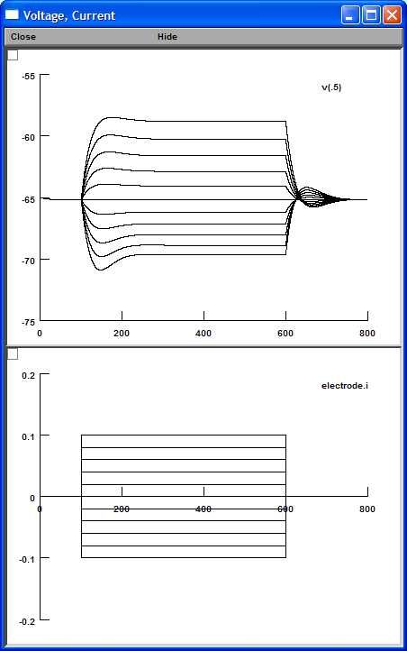
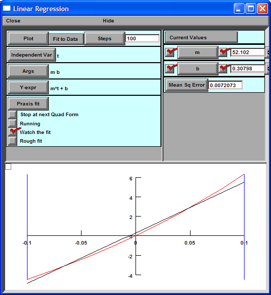
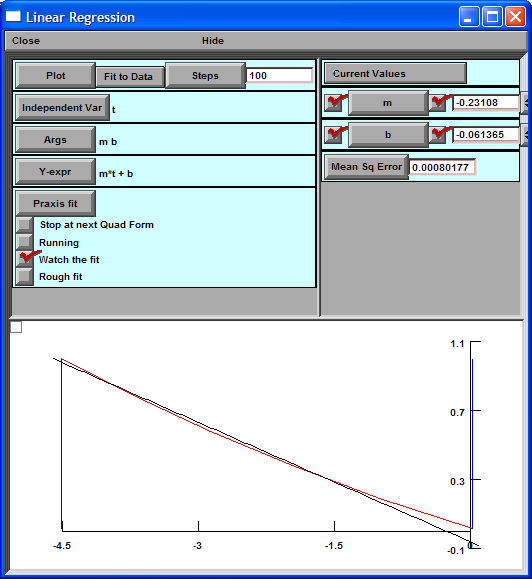

NEURON Tutorial #9
Goals: Measure Rin and rebound slope through linear regression
Downloads:
Steps:
- Double click "Main.hoc"
- Click "Current Step (500 ms)" button.
- Click "Run Step Family" button.

- Select "Fit to Data" / "Common Functional Forms" / "Linear"
- Select "Fit to Data" / "Read Data File".
- Select "v_i.dat"
- Check "Watch the fit" box.
- Click "Praxis fit" button.
Slope = 52.1 (MΩ)

- Select "Fit to data" / "Read Data File".
- Select "rebound_i.dat"
- Click "Praxis fit" button.
Rebound slope = -0.23 (mV/mV)
